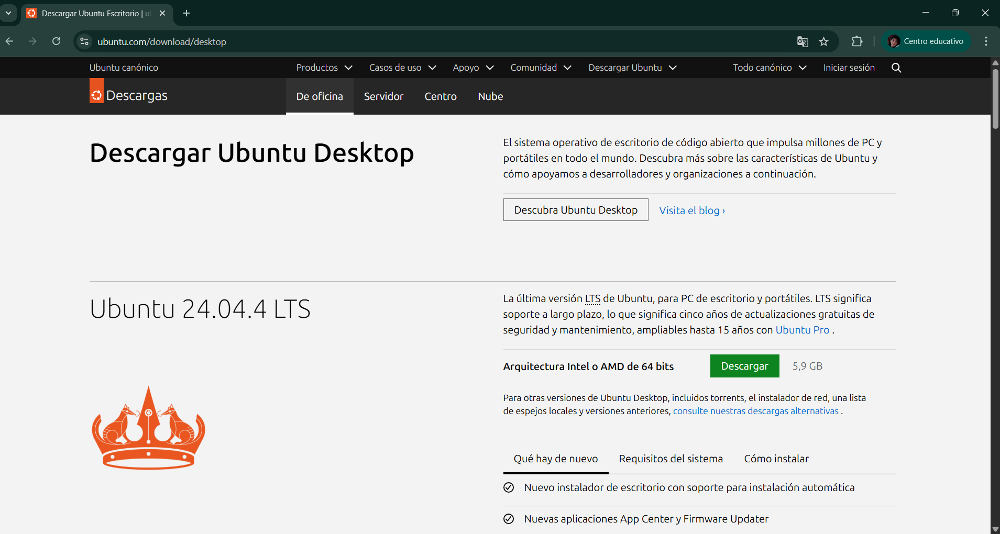

Aqui se realizo la instalacion de ubunto y virtualbox haciendo un informe de como lo fuimos instalado cada uno, luego de la instalacion se realiza una maquina virtual adentro con ubunto y luego se hace la utilizacion de codigo basico y la instalacion de tree.

El objetivo de este proyecto es instalar y configurar el sistema operativo Ubuntu junto con VirtualBox, creando una máquina virtual para realizar pruebas y ejercicios prácticos. Además, se busca familiarizar con las herramientas de virtualización y el entorno de trabajo en Linux.

En conclusión, el proyecto de instalación de Ubuntu y VirtualBox ha permitido aplicar conocimientos técnicos y habilidades prácticas para garantizar el buen funcionamiento y seguridad de la infraestructura. A través de la realización de tareas de instalación y configuración, se ha logrado identificar y solucionar problemas potenciales, prolongando la vida útil de la torre y asegurando su operatividad. Además, la documentación del proceso ha facilitado el análisis y la mejora continua en futuras intervenciones de mantenimiento.
© 2026 Mi Portafolio. Todos los derechos reservados.